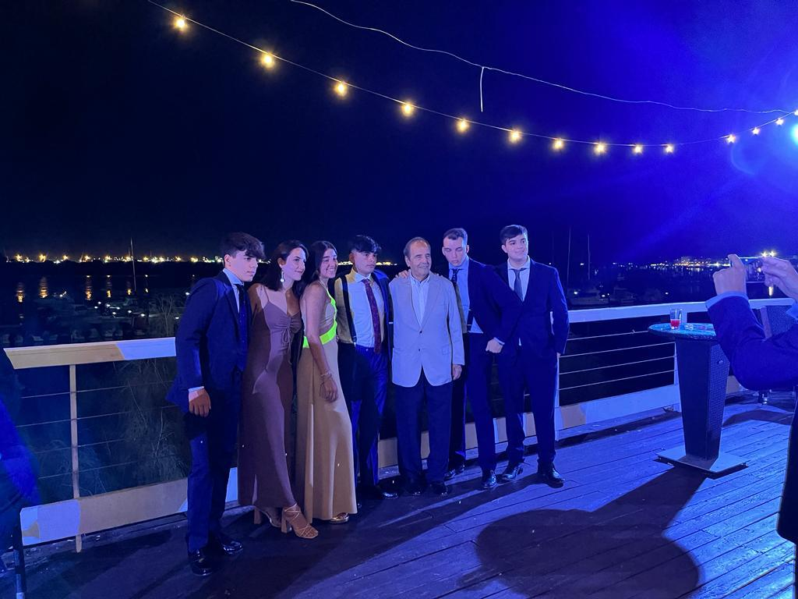

|  |
| Esta fiesta no creo que la
olvide ya que fue en el cumpleaños de mi hermana cuando cumplió los 18.
En esta foto salimos todos los primos hermanos Elena, Lucía, Pablo, Alejandro, Alberto,
mi abuelo Antonio y yo. Estuvieron también mis padres Jaime y Mailo,
mis tios Miguel y María, Ismael y Cinta, Antonio Jesus y Rocio, mis
abuelos Miguel y Loli, también estuvieron , mis primas Clara y Sofía y
todos los amigos de mi hermana la mayoría del colegio. Estuvo muy bien ya que estaba todo preparado perfecto, había un catering que la verdad que me harte de comer, había un photocall con tonterias para disfrazarse y después hubo barra libre con la que arrasamos entre todos y un DJ durante toda la noche acabamos a las 7 de la mañana si no recuerdo mal y después nos fuimos a un parque todos. |